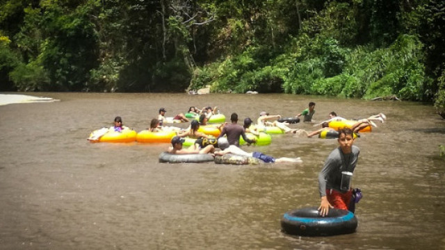
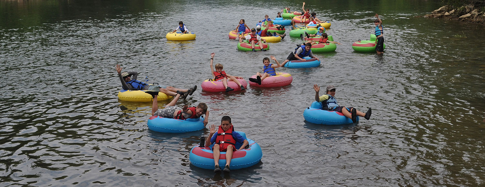

Tubing es una actividad recreativa donde un individuo se coloca en la parte superior de un tubo interior, ya sea en el agua o nieve.Los tubos son también conocidos como "donuts" o "galletas" debido a su forma.
El tubing de arrastre por lo general se lleva a cabo en un lugar con mucha agua como un lago o un río. Uno o varios corredores (también llamados "tubers") atan sus tubos a una embarcación como un bote de motor o a moto acuática. Los corredores son remolcados a través del agua por una embarcación.
En el tubing de flotado libre, las personas que lo practican no están amarradas y con frecuencia son llevadas por la corriente de un canal de agua. Los tubers reman con las manos a veces con guantes utilizados a para dirigir el tubo.